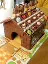
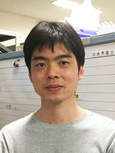
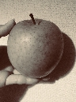

Member
研究室のメンバー
| 大学院環境情報研究院 社会環境と情報部門 ・ 理工学部 数物・電子情報系学科 情報工学EP | |||||||||
|---|---|---|---|---|---|---|---|---|---|
| 教授 | 長尾 智晴 | 秘書 (非常勤 事務補佐員) |
石井 純子 | 黒坂 紀子 | |||||
| 大学院環境情報学府 情報メディア環境学専攻 博士課程後期（博士課程）所属学生： 計１１名 | |||||||||
| ３年生・ ３年生以上(長期履修社会人学生) | 平野 祐一 | 荒井 敏 | 乾谷 徹 | 藤田 耕作 | 前鼻 航 | ||||
| ２年生 | 坂本 淳子 | 西家 宏典 | |||||||
| １年生 | 元村 和史 | 小林 雅幸 | 玉城 哲平 | 村上 聡 | |||||
| 大学院環境情報学府 情報メディア環境学専攻 博士課程前期（修士課程）所属学生： 計１６名 | |||||||||
| ２年生 | 飯塚 洸平 | 伊藤 有気 | 狩野 悌久 | 西村 晋平 | 松山 直樹 | 平山 千明 | 杜 冰清 | ||
| １年生 | 畢 藝飛 | 五十嵐大地 | 加藤 慎二 | 佐保田和宏 | 高石 一樹 | 阪野 優太 | 宗藤 大貴 | 髙梨 雄大 | 陳 珊珊 |
| 理工学部 数物・電子情報系学科 情報工学EP 所属学生： 計６名 | |||||||||
| 学部４年生(卒研生) | 伊藤 鈴奈 | 志賀 友哉 | 柴田 有咲 | 原田 恭兵 | 水山 佳乃 | 山口 怜視 | |||
| 平成30年度 春学期 長尾研究室所属学生： 博士１１名，修士１６名，学部生６名 合計：３３名 | |||||||||